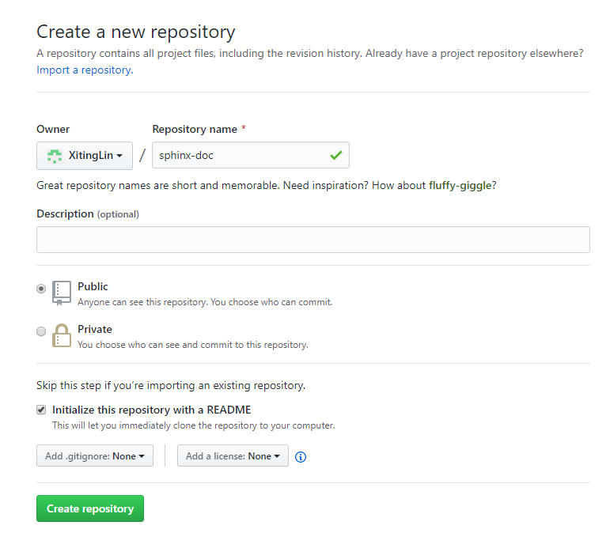

2. github¶
把本地文档上传至 github 网站
2.1. 创建仓库¶
2.2. 把本地文件上传至远程仓库¶
2.2.2. 添加所有文件到暂存区¶
1 | git add *
|
2.2.3. 将暂存区内容提交到本地仓库¶
1 | git commit -m "项目本地仓库上传"
|
2.2.4. 连接远程仓库(SSH和HTTPS方式都行)¶
1 | git remote add origin git@github.com:rangdandanfei/git-use-demo.git
|
2.2.5. 拉取(pull)远程仓库master分支代码，与本地进行合并，再将本地仓库master分支代码push到远程¶
1 | git pull --rebase origin master
|
2.2.6. 提交到远程仓库¶
1 | git push -u origin master
|
- git push 将当前分支推送至远程同名分支
- git push origin [branch-name] 推送本地某分支至远程某分支
- git push -u origin [branch-name] 推送本地某分支至远程某分支，并跟踪